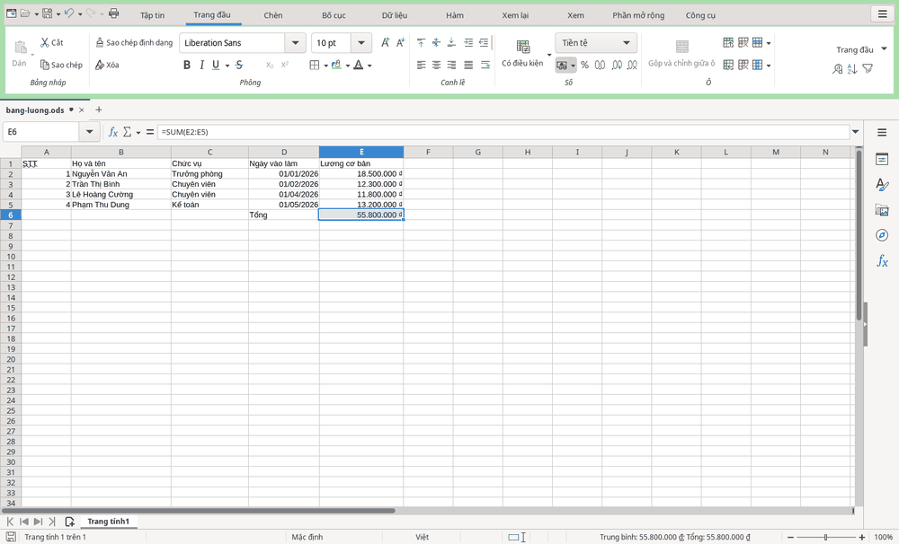
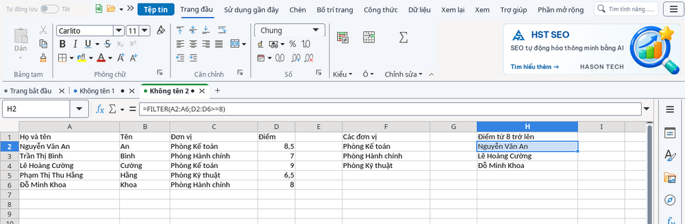

Bảng tính
Bảng tính: công thức
Công thức trong HST Sheets bắt đầu bằng dấu =.
Nhập công thức
- Chọn ô cần hiển thị kết quả.
- Nhập công thức bắt đầu bằng
=, dùng địa chỉ các ô chứa dữ liệu.
| Công thức | Ý nghĩa |
|---|---|
=SUM(B2:B10) | Cộng các giá trị từ ô B2 đến ô B10. |
=B2*C2 | Nhân giá trị ở ô B2 với giá trị ở ô C2. |
Tính tổng một cột
Nút (Σ) trên thẻ dùng để cộng nhanh một cột. Bạn cũng có thể nhập công thức SUM để chỉ rõ vùng cần cộng.
Trong bảng mẫu dưới đây, ô E6 có công thức =SUM(E2:E5). Kết quả hiển thị là 55.800.000 ₫.

Mảng động tự tràn
Công thức trả về nhiều giá trị, như FILTER, SORT, UNIQUE, SEQUENCE, MAP hay BYROW, tự điền kết quả ra các ô bên dưới và bên phải ô công thức. Chỉ cần nhập công thức rồi nhấn Enter, không cần Ctrl+Shift+Enter.
| Công thức | Kết quả |
|---|---|
=UNIQUE(C2:C6) | Danh sách các đơn vị, mỗi đơn vị một lần. |
=FILTER(A2:A6;D2:D6>=8) | Họ tên những người có điểm từ 8 trở lên. |

- Nếu vùng kết quả bị chặn bởi ô đã có dữ liệu, ô công thức báo
#SPILL!. Xóa hoặc dời dữ liệu cản đường thì kết quả hiện lại. - Dùng
H2#để tham chiếu cả vùng kết quả của ô H2, ví dụ=COUNTA(H2#). Vùng này tự co giãn theo kết quả. - Tệp
.odsdo HST Office lưu, khi mở lại, vẫn giữ mảng động.
Các lệnh định dạng của HST chỉ đổi cách hiển thị; giá trị và công thức được giữ nguyên. Xem định dạng bảng tính.